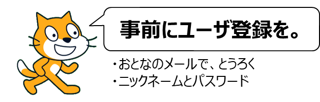
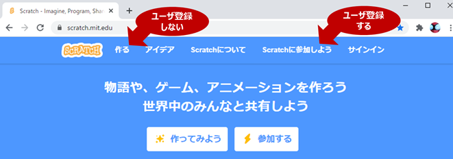
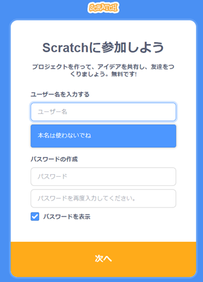
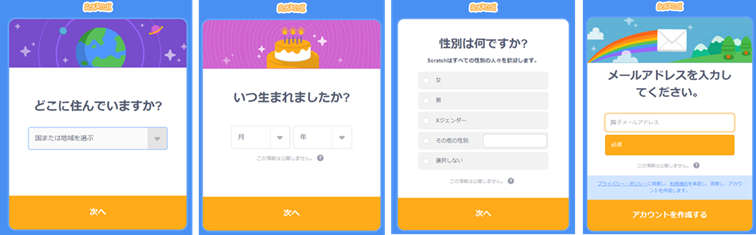
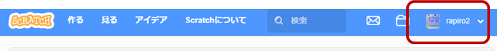
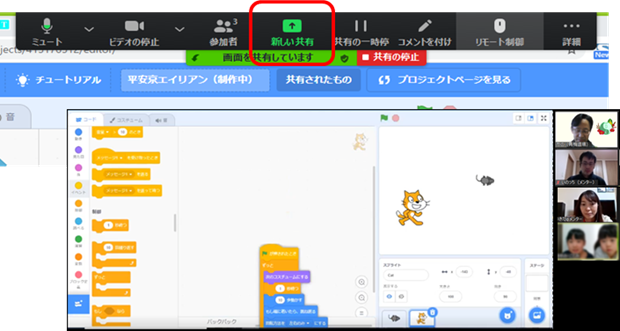
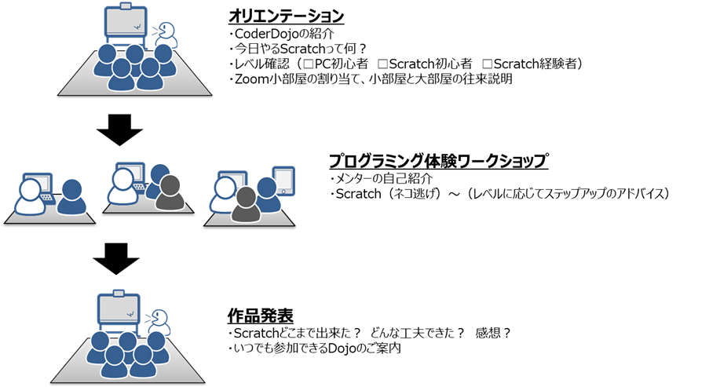
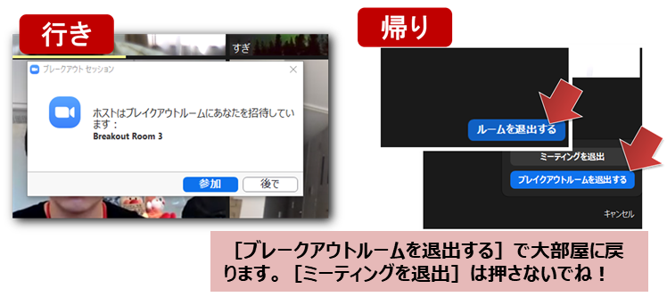

CoderDojo（コーダー道場）に初めて参加される人は、プログラミング環境（スクラッチScratch）の準備とオンライン会議（Zoom）の事前確認をお願いします
Scratchにユーザ登録をすると、子どもたちが制作したプログラム作品を保存したり、他の人と共有したり、とても楽しく継続的な学習ができます。ユーザ登録しなくてもScratchを利用することは可能ですが作品を保存することができません。ブラウザを終了すると続きを制作することもできません。
まずはChromeブラウザで＜https://Scratch.mit.edu/＞にアクセスします。
参加方法（下記のいずれか）
その１．ユーザ登録する場合、作品を保存できる！（ユーザ名/パスワード/メール が必要）
その２．ユーザ登録しなくても、お試しならすぐ遊べる。作品は保存できない（パスワード不要、でも間違えて消しちゃうかも）

英数字です（日本語だめ）！英数字、ハイフン（-）、アンダーバー（_）のみ［例：Rapiro2］。
（約束）パスワードは、絶対に他の人に教えないこと！

住んでいる国（Japan）、生まれた年を登録します。13歳以下の場合は保護者の承認が必要です。お父さんかお母さんのメールアドレスで登録をしてください。
他のScratchユーザーからいいねやコメントが届く可能性があるので、知らない人からメールが届いた場合は大人のひとに相談するなど注意してください。

画面右上に自分のニックネームが表示されたら登録完了です。

コロナ禍の間はZoomでのオンライン開催。Zoomのインストールと操作の注意点を確認ください。
WEBブラウザでZoomに参加するとアプリがダウンロードされますが、事前にダウンロードしておくと当日、楽・安心です。
Zoom操作メニューの［新しい共有］を選びます。みんなに見せる画面を選んでください。

当日の案内メールのZoomに再度入ってください。
みんなが集まる大部屋で発表、少人数ずつ小部屋に分かれて作業するときの進め方です。

部屋割りをしたら［参加］を押して小部屋（ブレークアウトルーム）へ移動します。
みんなのいる大部屋に戻るときは［ブレークアウトルームを退出］です。
